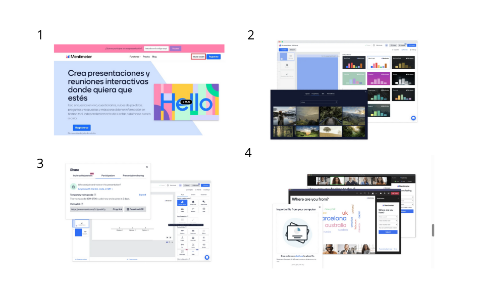

mentimeter
¿QUE ES Y PARA QUE SIRVE?
es una herramienta de presentacion interectiva que permite
a los usuarios crear presentaciones dinamicas y atractivas para audiencias en vivo
o en linea sirve para crear presentaciones y volverlas interactivas y dinamicas
para fomentar la participacion,recopilar retroalimentacion y mejorar la experiencia
del usuario, los pasos para usarla son:
- 1 crear una cuenta,2 crear una presentacion(hay
temas y plantillas para tu presentacion),3 agrega preguntas y contenido,4 configura
las preguntas(para que se puedan responder en tiempo real),5 comparte la presentacion
(con un enlace o QR),6 interactua con la audiencia y ver los resultados de las preguntas
son los ultimos pasos esto es de manera muy resumida como puedes usarla sin mencionar
varias funciones con las que cuenta la aplicacion

¿QUIEN LA CREO?¿QUE LA DIFENCIA DE LAS DEMAS APLICACIONES?¿COMO AYUDO A LA COMUNIDAD DIGITAL?
fue creada por Johnny Warstrom en 2014 un emprendedor sueco,tiene varias cosas que
la diferenciande las demas aplicaciones como su interaccion en tiempo real con las personas que estan en
tu presentacion, tambien por su facil utilizacion lo que hace que cualquier persona que tenga la necesidad
de usarla pueda crear una gran presentacion y que con su analisis y visualizacion de datos tambien hace facil
su uso,ayudo con su aplicacion de varias maneras:
- mejorar la interaccion:mentimeter permite a los usuarios crear presentaciones
interactivas que fomentan la participacion y la retroalimentacion de la audiencia
- facilita la recopilacion de datos:ayuda a recopilar datos en tiempo real lo que puede ser
util para ajustar la presentacion o el contenido
- mejoro la experiencia de usuario:ofrece una experiencia interactiva y dinamica que puede
mejorar la participacion y la comprension de la audiencia
como hacer una nube de palabras en mentimeter
- crear una presentacion y elige el tipo de diapositiva llamado nube de plabras
- configura la nube de palabras segun tus necesidades
- pide a la gente que contribuya con palabras o frases que se agregaran a la nube de palabras
- visualiza la nube de palabras y ajusta las opcciones de visualizacion segun tus gustos
- analiza los resultados y utiliza la informacion para ajustarlos a tu presentacion
regresar al inicio